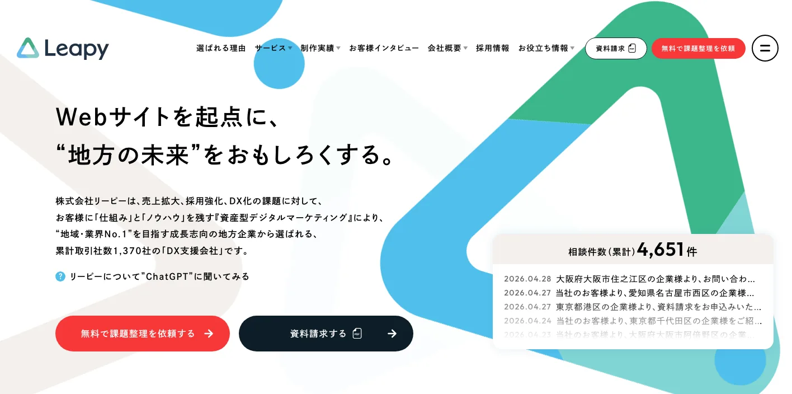
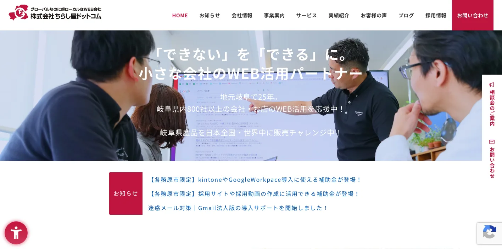
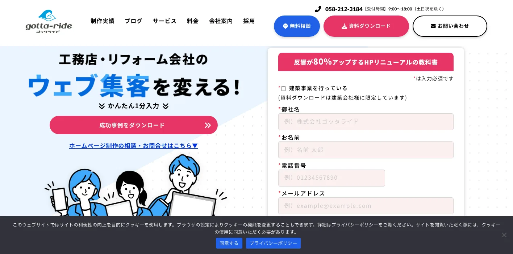
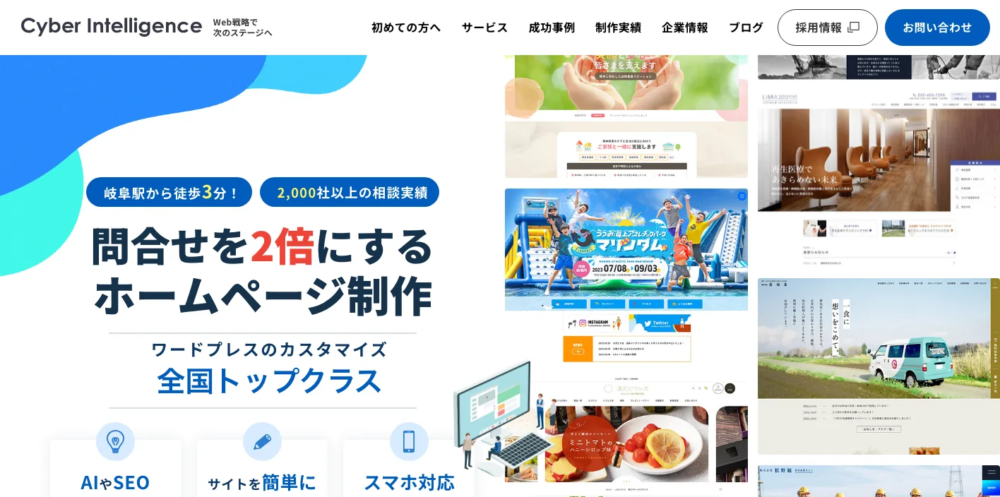
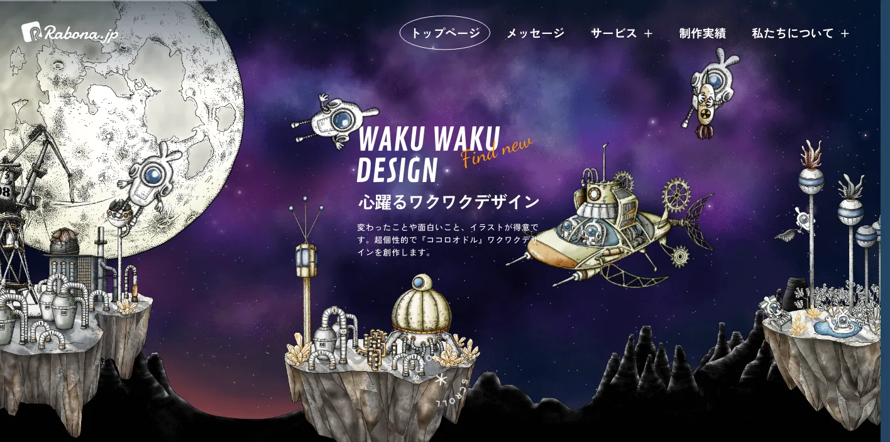
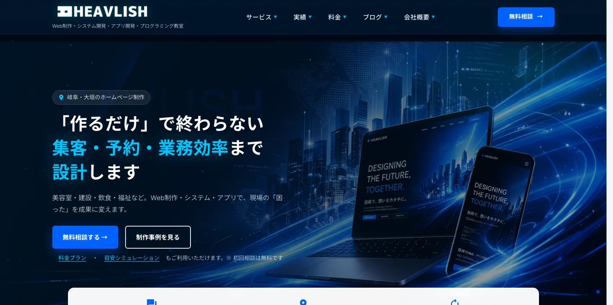
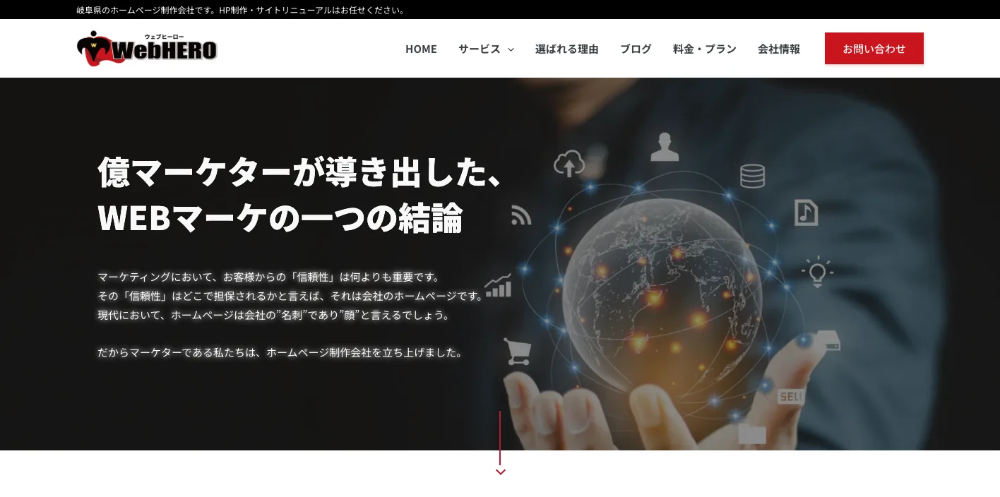
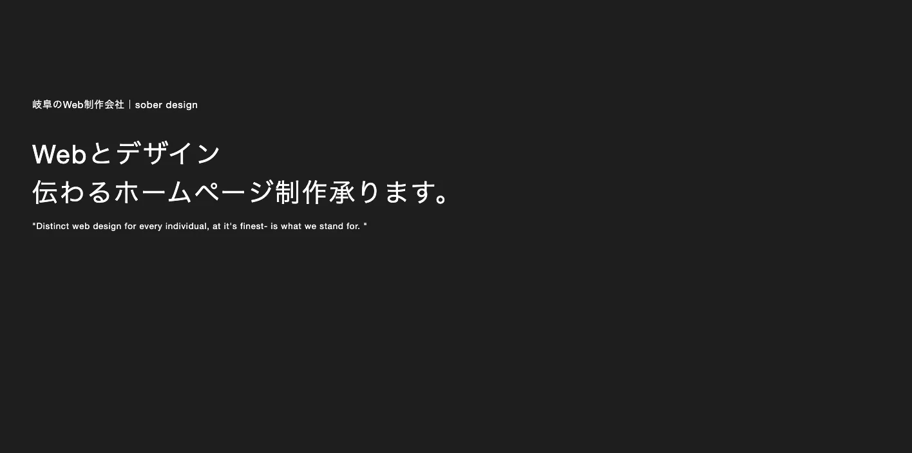
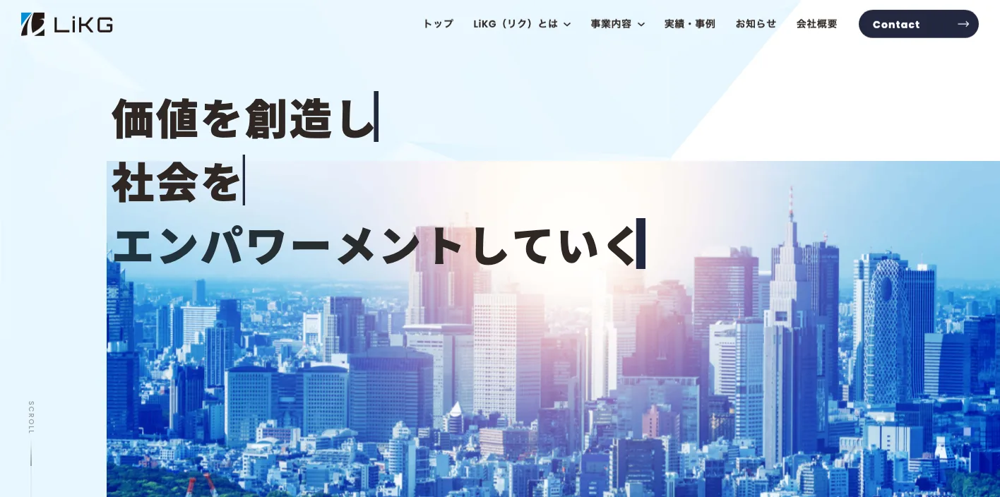

岐阜県でおすすめのLLMO会社10選｜費用相場と選び方もわかりやすく解説

岐阜県でLLMO会社を選ぶときは、「岐阜のホームページ制作会社」だけで探すと判断を誤りやすいです。岐阜市の生活者向け商圏、大垣市を中心にした西濃のBtoB、各務原市の航空宇宙・製造、関市の刃物、美濃・可児・美濃加茂の中濃商圏、多治見・土岐・瑞浪の陶磁器、高山市・下呂市・白川郷の観光では、AIに答えさせたい質問がまったく違うからです。
岐阜県の推計人口は、令和7年9月1日現在で1,897,676人と公表されています。令和8年2月1日現在の県人口は、令和7年国勢調査の結果が明らかになり次第公表される扱いです。令和6年の岐阜県観光入込客統計では、観光入込客数が延べ6,655万7千人、行祭事・イベント入込客数が延べ642万8千人、観光消費額が4,012億73百万円でした。2023年経済構造実態調査の製造品出荷額等の都道府県別表では、岐阜県の製造品出荷額等は65,418億円、主要産業は輸送用機械、金属製品、生産用機械と示されています。
この記事では、岐阜県でLLMOに取り組むときに比較したい会社、選び方、費用相場をまとめます。基礎から確認したい方はLLMO対策の基礎記事、東海圏の近隣県も見たい方は愛知県の比較記事、甲信越の近隣県も確認したい方は長野県の比較記事も参考になります。自社サイトの現状を先に見たい場合は無料LLMO診断から確認できます。
目次

岐阜県でおすすめのLLMO会社10選
今回は、岐阜県内に拠点があり、ホームページ制作、SEO、Webマーケティング、ブランディング、広告、EC、システム、運用改善などの公開情報を確認しやすい会社を中心に選びました。県内でLLMO専業を大きく打ち出す会社はまだ限られるため、AI検索そのものを明示している全国対応会社も補完的に加えています。
LLMOでは、検索順位だけでなく、AIが回答を作るときに参照しやすい会社情報、サービス情報、料金、事例、FAQ、地域ページ、専門性の説明が必要です。岐阜県の場合は、岐阜市周辺のローカル集客、西濃・中濃・東濃の製造業、飛騨の観光、県産品のEC、採用情報まで含めて、どの質問に答える会社なのかを見分けることが重要です。
| 会社名 | 主な拠点・対応 | 向いている企業 | 確認できる主な支援領域 |
|---|---|---|---|
| 株式会社リーピー | 岐阜市・名古屋市 | Webサイトを起点に売上・採用・DXを整えたい地方企業 | Webサイト制作、マーケティング代行、SEO、採用支援、DX支援 |
| ちらし屋ドットコム | 各務原市・岐阜県内 | 地域密着でWeb活用、EC、システムまで相談したい中小企業 | ホームページ制作、EC、Webシステム、kintone、ITサポート |
| 株式会社ゴッタライド | 岐阜市・全国対応 | 工務店、リフォーム会社、塗装会社のWeb集客を強めたい企業 | 建築業界特化のホームページ制作、運用、SEO、広告、SNS |
| 株式会社サイバーインテリジェンス | 岐阜市 | 問い合わせ増加を目的にサイト改善と集客をまとめたい企業 | Webコンサル、ホームページ制作、SEO、Web広告、採用支援、AIO情報発信 |
| 株式会社ラボーナ | 岐阜市 | デザイン、ブランディング、EC、SEOを一体で見直したい企業 | ホームページ制作、ブランディング、EC、SEO、広告、動画 |
| HEAVLISH | 大垣市 | 西濃で低予算のWeb制作やシステム相談から始めたい企業 | ホームページ制作、システム開発、アプリ開発、AIリテラシー教育 |
| WebHERO合同会社 | 岐阜県内・全国対応 | SEO、広告、Webマーケティングの実務経験を重視したい企業 | ホームページ制作、SEO対策顧問、運用保守、Web広告、集客改善 |
| sober design | 岐阜市 | クリエイティブとLLMO/AIOを同時に相談したい企業 | Web制作、ブランディング、SEO、Web広告、LLMO/AIO、写真・動画 |
| 株式会社LiKG | 全国対応 | AI検索診断、独自データ活用、SEO連動まで進めたい企業 | LLMO診断、LLMO×SEOコンサル、記事制作、EEAT強化 |
| 株式会社ジオコード | 全国対応 | SEO、AIO、LLMO、実装、コンテンツまでまとめたい企業 | SEO、AIO/LLMO、コンテンツ、UI/UX、サイト修正、Web制作 |
株式会社AIMAは岐阜本社の会社ではありませんが、全国対応でLLMO支援を提供しています。月額5万円のLLMO支援は初期費用なし・1ヶ月単位で始められ、質問設計、記事制作、引用チェックに絞って実務を進められます。岐阜市、大垣市、各務原市、関市、多治見市、高山市、下呂市のように検索文脈が分かれる場合も、まず無料LLMO診断で優先順位を確認できます。
株式会社リーピー

株式会社リーピーは、岐阜市と名古屋市を拠点に、Webサイト制作、マーケティングDX支援、採用DX支援などを展開する会社です。公式サイトでは、導入社数1,370社超、Webサイト制作、コーポレートサイト制作、採用サイト制作、ECサイト制作、リープ・プロジェクトによるマーケティング代行、SEO対策によるアクセス獲得、採用業務代行、人材紹介などを確認できます。
岐阜県でLLMOを進める場合、単発の記事制作だけではなく、売上、採用、DX、地域での認知をつなげる必要があります。リーピーは、岐阜市周辺の成長志向の中小企業、採用に悩む製造業、ECを伸ばしたい県産品事業者、地域No.1を狙うサービス業が、Webサイトを事業の土台として作り直したい場合に向いています。
参考：株式会社リーピー｜トップページ、参考：株式会社リーピー｜ブランディング支援
ちらし屋ドットコム

ちらし屋ドットコムは、各務原市のWeb会社です。公式サイトでは、地元岐阜で24年、岐阜県内780社以上の会社・店舗のホームページ制作・活用、Webシステム開発・活用、ネット販売を支援していることが示されています。サービスとして、ホームページ制作、オリジナルホームページ制作、英語ホームページ制作、BtoB ECサイト、ECサイト構築、ホームページ・ECサイト活用支援、kintone導入・活用支援、Webシステム開発、LINEシステム開発、Google Workspace導入、ITサポートなどを確認できます。
各務原市は航空宇宙関連の文脈があり、岐阜市・羽島・可児方面ともつながる商圏です。ちらし屋ドットコムは、地域密着で相談しながら、会社案内、EC、業務システム、受発注、ITサポートまでまとめたい企業に向いています。LLMOでは、商品やサービスだけでなく、業務フロー、対応範囲、注文方法、法人取引のFAQを整理できるかが重要になります。
株式会社ゴッタライド

株式会社ゴッタライドは、工務店、リフォーム会社、塗装会社に特化したホームページ制作・運用・Web集客支援会社です。公式サイトでは、建築業界向けのホームページ制作、ホームページ運用・保守、リスティング広告運用、伴走型SEO支援、Instagram運用支援を確認できます。全国の工務店・リフォーム会社向けに、Web集客支援1,000社以上の実績も掲げています。
岐阜県では、岐阜市・大垣市・各務原市・可児市・多治見市・高山市などで、住宅、リフォーム、外壁塗装、工務店、地域密着の建築会社が多く検索されます。住宅系のLLMOでは、施工エリア、対応工法、費用、補助金、断熱、耐震、リフォーム事例、口コミ、現場写真、保証、アフター対応が質問になりやすいです。ゴッタライドは、建築業界の問い合わせ導線を深く作りたい会社に向いています。
株式会社サイバーインテリジェンス

株式会社サイバーインテリジェンスは、岐阜市のホームページ制作・Webマーケティング会社です。公式サイトでは、Webコンサルティング、ホームページ制作、SEO対策、Web広告、採用活動支援、成功事例、制作実績を確認できます。岐阜駅から徒歩3分、2,000社以上の相談実績、問い合わせを増やすホームページ制作、WordPressカスタマイズ、AIやSEO対応などの訴求も掲載されています。
岐阜県内で「サイトはあるが問い合わせが増えない」という課題がある場合、LLMOだけを切り出すより、SEO、広告、アクセス解析、ページ構成、問い合わせ導線を同時に見直すほうが効果を出しやすいです。同社は、岐阜市周辺の医療、士業、建築、製造、採用、店舗、BtoB企業が、既存サイトの改善とAI時代の情報設計を一緒に進めたい場合に向いています。
株式会社ラボーナ

株式会社ラボーナは、岐阜市のホームページ制作・ブランディング会社です。公式サイトでは、ホームページ制作、ブランディング、ECサイト制作、成果報酬型ネットショップ運用、SEO対策、Web広告運用代行、動画制作、YouTube代行、補助金代行申請サポートなどを確認できます。SEOラボの会社案内では、2005年創業、岐阜のWeb会社としてホームページ制作や運営、SEO業務、ネットショップ運営を行っていることも示されています。
岐阜県には、関の刃物、美濃和紙、東濃の陶磁器、飛騨の家具、地酒・食品など、デザインとストーリーが売上に直結しやすい県産品があります。ラボーナは、単なる検索対策ではなく、ブランドの見せ方、EC、動画、広告、SEOをまとめて整えたい企業に向いています。LLMOでは、商品名だけでなく、素材、用途、職人性、ギフト、法人利用、海外向け説明まで整理する力が重要です。
参考：株式会社ラボーナ｜トップページ、参考：SEOラボ｜会社案内
HEAVLISH

HEAVLISHは、大垣市のIT企業です。公式サイトでは、ホームページ制作、システム構築、アプリ開発、プログラミング教室を確認できます。ホームページ制作では、デザイン、SEO、スマホ対応、WordPress、直コーディング、料金プランを公開し、ベーシック22,000円から、スタンダード77,000円からといった低予算の入口も示されています。
西濃エリアでは、大垣市、海津市、養老町、垂井町、関ケ原町など、地域の店舗、建設、製造、医療、福祉、教育、士業が広域で商圏を持ちます。大規模なLLMOコンサルをいきなり入れるより、まず基本サイト、FAQ、料金、アクセス、事例、予約導線を整えたい会社も多いはずです。HEAVLISHは、小さく始めながら、必要に応じてシステムやアプリまで広げたい企業に向いています。
WebHERO合同会社

WebHERO合同会社は、岐阜県のホームページ制作・SEO対策・Webマーケティング会社です。公式サイトでは、ホームページ制作、SEO対策顧問、運用保守、Web広告、検索エンジンからの集客、メディア運営、さまざまな業種のコンサル実績を確認できます。初期費用を抑えた月額プラン、完成後のサポート、更新できるシステムの導入も訴求されています。
LLMOでは、サイトを公開して終わりではなく、検索結果、AI回答、ユーザー行動を見ながら改善し続ける必要があります。WebHEROは、岐阜県内の店舗、工事業、美容、医療、メーカー、スクール、飲食などで、制作後の運用や集客改善まで見てほしい企業に向いています。地域名と業種名の掛け合わせで、どの質問を取りにいくかを明確にすることが大切です。
sober design

sober designは、岐阜市のWeb制作・デザイン・マーケティング事務所です。運営会社の株式会社すいげんの会社情報では、Webサイト制作、ネットショップ制作、ブランディング支援、写真・動画撮影、印刷物制作、Web広告運用まで対応していることが示されています。サービス内容として、Web集客支援、SEO対策、LLMO・AIO対策、MEO対策、コンテンツマーケティング、SNS運用支援も確認できます。
岐阜県の中小企業では、会社の強みが社長や職人の頭の中にあるだけで、Web上に整理されていないケースがあります。sober designは、岐阜市周辺の店舗、製造、小売、飲食、医療、福祉、フィットネス、クリエイティブ業などで、見た目、写真、文章、SEO、LLMO/AIOを一体で整えたい企業に向いています。
参考：sober design｜会社情報、参考：sober design｜ホームページ作成
株式会社LiKG

株式会社LiKGは、全国対応のWebマーケティング会社です。公式のLLMOコンサルティングページでは、AI検索における現状を診断で可視化し、SEO対策の知見をベースにAI検索エンジンを最適化する支援を確認できます。料金例として、LLMO診断プラン10万円から、LLMO×SEOコンサルティングプラン30万円から、EEAT強化記事制作5万円からが掲載されています。
岐阜県内の地場会社だけでは、LLMOを明示した診断やAI検索の可視化まで対応できない場合があります。LiKGは、県内会社に取材や制作を任せつつ、AI検索診断、構成、独自データ、EEAT強化、記事改善を外部の専門会社に任せたい企業に向いています。製造業、観光、県産品EC、採用など、競合が県外にも広がるテーマで検討しやすい会社です。
株式会社ジオコード

株式会社ジオコードは、SEO、AIO、LLMOなどAI最適化も支援する全国対応会社です。公式サイトでは、SEO・コンテンツ・オウンドメディアから、AIO・LLMOなどAI最適化まで支援すること、SEO対策コンサルティング、コンテンツマーケティング、AIO・LLMO、UI/UX改善、広告運用、LP・バナー制作などを確認できます。料金例として、SEOの通常プラン15万円から、Web制作プランではサービスサイト制作300万円から、メディアサイト制作200万円からも掲載されています。
ジオコードは、サイト修正や記事制作、UI/UX改善まで含めて、実装力を重視したい企業に向いています。岐阜県のBtoB製造業、医療、住宅、県外商圏を持つEC、採用に力を入れる会社では、AI検索で名前が出るだけでなく、問い合わせにつながるページ構造が必要です。SEO、AIO、LLMOを一体で見たい場合の比較候補になります。
岐阜県のLLMO会社を比較する際のポイント
ここでは、会社名の知名度ではなく、岐阜県で成果に直結しやすい比較軸を整理します。会社紹介では「誰に向いているか」を見ましたが、このブロックでは発注前に見るべき能力を、岐阜市圏、西濃・中濃の製造、東濃の陶磁器、飛騨の観光、県内会社と全国対応会社の役割分担に分けます。
岐阜市・各務原市は、生活者向け検索とBtoB検索を分ける
岐阜市周辺では、医療、士業、住宅、採用、教育、店舗、行政関連、BtoBサービスが同じ商圏に混ざります。各務原市は航空宇宙関連企業や製造業の文脈を持ちながら、岐阜市・名古屋方面との通勤・消費圏にも近い地域です。「岐阜市 歯科 おすすめ」「各務原 工場 ホームページ」「岐阜 採用サイト 制作」のように、検索する人が個人なのか法人なのかで必要な情報は変わります。
比較する会社には、トップページを整えるだけでなく、サービス別ページ、料金、事例、FAQ、採用、地域名ごとの対応情報をどう分けるかを聞いてください。LLMOでは、AIが質問に答えるための材料をページ単位で整理する必要があります。
大垣・西濃は、広域商圏と業務システムの相談力を見る
大垣市を中心にした西濃では、地域店舗だけでなく、製造、物流、建設、医療、福祉、教育、士業、行政関連の会社が広域で顧客を持ちます。名古屋圏や滋賀・三重方面との移動も考えると、「地元だけに見せるサイト」では足りないケースがあります。
この地域では、会社案内、問い合わせフォーム、採用、予約、受発注、在庫、顧客管理など、Webサイトと業務のつなぎ込みが課題になりやすいです。比較する会社には、SEOだけでなく、フォーム改善、CRM、kintone、EC、予約、システム連携の経験を確認するとよいです。
関・美濃・可児・美濃加茂は、製造業と地場産業の一次情報を出せるかを見る
岐阜県公式情報では、県内には美濃和紙、関の刃物、東濃の陶磁器、飛騨の木工製品、地酒・食品など、国内外に誇る地場産品があると紹介されています。県議会資料でも、繊維、陶磁器、家具・木工、刃物、紙、プラスチック、食品など、地域の歴史や文化に根差した地場産業が挙げられています。
BtoBや県産品のLLMOでは、きれいなデザインよりも、素材、製法、設備、加工範囲、品質管理、対応ロット、納期、OEM、受賞歴、職人性、使用シーンを正確に出せるかが重要です。比較する会社には、営業資料や職人の説明を、AIが読み取りやすいWeb情報に変換する力があるかを確認してください。
多治見・土岐・瑞浪は、陶磁器・タイル・ECの見せ方を確認する
東濃エリアは、陶磁器、タイル、建材、飲食店向け器、ギフト、EC、観光体験の文脈が強い地域です。LLMOでは、「どの器を選べばよいか」「業務用に対応できるか」「電子レンジや食洗機は使えるか」「法人の記念品に向くか」「海外発送できるか」といった質問に答えられるページが必要です。
比較する会社には、商品ページ、カテゴリページ、用途別ページ、作り手紹介、購入ガイド、法人向けFAQ、写真、動画、EC導線まで設計できるかを見ます。陶磁器や県産品は、単に商品名を並べるより、選び方と使い方を整理したほうがAI検索で引用されやすくなります。
高山・下呂・白川郷は、観光の質問に答えられるかを見る
令和6年の岐阜県観光入込客統計では、観光入込客数が延べ6,655万7千人、観光消費額が4,012億73百万円でした。高山、下呂温泉、白川郷、奥飛騨、長良川鵜飼、郡上八幡などでは、宿泊、交通、季節、天候、外国人対応、子連れ、駐車場、混雑、予約、キャンセル、周遊ルートの質問が出やすくなります。
観光事業者がLLMO会社を比較するときは、施設紹介だけでなく、アクセス、モデルコース、よくある質問、季節別の注意点、外国人向け情報、予約前の不安解消まで設計できるかを見てください。観光では、AIに「この人にはどの施設や体験が向くか」を説明してもらう準備が必要です。
県内会社と全国対応会社は、役割を分けて考える
岐阜県内の会社は、現地取材、撮影、地元商圏、製造現場、観光地、店舗の肌感覚に強いことが多いです。一方で、LLMOを明示する全国対応会社は、AI検索診断、構造化データ、既存記事改善、全国競合との比較、専門チームでの検証に強い場合があります。
おすすめは、最初に「何が足りないか」を切り分けることです。サイトが古い、写真が足りない、地域情報が薄いなら県内会社。記事は多いのにAI検索で出ない、構造化データや競合比較が弱いなら全国対応会社。両方必要なら、県内会社に取材・制作を任せ、LLMO会社に設計とチェックを任せる形もあります。
参考：岐阜県人口動態統計調査（令和7年9月1日現在）、岐阜県の人口・世帯数月報202602、令和6年岐阜県観光入込客統計調査、2023年経済構造実態調査 製造品出荷額等の都道府県別順位及び主要産業、県産品をオンラインで購入できるウェブサイト、岐阜県 航空宇宙産業課、岐阜県の主なスタートアップ等支援事業の紹介
岐阜県のLLMO会社に依頼する費用相場
LLMOの費用は、診断だけなのか、記事制作まで含むのか、サイト改修、撮影、EC、予約、採用、CRM、システム開発まで必要なのかで変わります。岐阜県では、岐阜市周辺の店舗・医療・士業、西濃・中濃・東濃の製造業、飛騨の観光、県産品EC、採用強化など、追加で作るべきページやFAQの量が業種によって大きく変わります。
| 依頼内容 | 費用目安 | 岐阜県での考え方 |
|---|---|---|
| LLMO診断・AI検索の現状確認 | 無料〜10万円前後 | 自社名、地域名、業種名、観光名、商品名でAIにどう出るかを見る段階 |
| 小規模なSEO・LLMO運用 | 月額5万円〜15万円前後 | FAQ、地域ページ、既存記事改善、事例追加を小さく回す段階 |
| 伴走型のSEO・LLMO支援 | 月額15万円〜30万円前後 | 競合調査、構成作成、構造化データ、改善提案、定例を含む段階 |
| サイト制作・改修込み | 30万円台〜300万円超 | 撮影、採用、EC、予約、CRM、製品情報、システム連携の有無で広がる |
| 観光・製造・県産品ECの本格運用 | 月額30万円以上 | 複数地域、商品カテゴリ、営業資料、事例制作、多言語対応まで必要な段階 |
診断だけなら、まずは質問の棚卸しが中心
診断では、「岐阜 LLMO会社」「岐阜市 ホームページ制作」「大垣 製造業 Web集客」「関 包丁 OEM」「多治見 陶磁器 ギフト」「高山 ホテル 子連れ」「下呂温泉 日帰り 予約」のような質問で、自社や競合がAIにどう扱われているかを確認します。いきなり記事を増やすより、どの質問で選ばれたいかを決めることが先です。
岐阜県の場合、観光、地場産品、製造、住宅、医療、採用、ECで質問の形が変わります。診断費用が安くても、調査する質問が浅いと意味がありません。県内の地名、業種、季節、購買目的、法人利用まで含めて見てくれるかを確認してください。
月額5万〜15万円は、既存サイトを育てる段階
小規模運用では、既存ページの修正、FAQ追加、地域ページ、事例ページ、お知らせ、ブログの改善を進めます。岐阜市や大垣市の店舗、士業、治療院、住宅、採用、観光施設、県産品ECなどは、最初から大きな改修をせず、AIに拾われやすい基本情報を増やすだけでも前進します。
この価格帯では、毎月大量の記事を作るより、料金、対応エリア、予約、アクセス、キャンセル、事例、よくある質問を整えるほうが現実的です。文章の量より、ユーザーの疑問に答える密度を重視してください。
月額15万〜30万円は、競合調査と構造改善まで含める段階
岐阜県の企業では、高山・下呂・白川郷の観光、関の刃物、東濃の陶磁器、各務原周辺の航空宇宙、製造業、県産品EC、採用など、競合が県内だけでなく全国に広がる領域があります。この場合、既存記事の修正だけでなく、競合調査、検索意図の分類、構造化データ、内部リンク、CV導線、事例作成が必要です。
社内に担当者がいるなら、LLMO会社には戦略と構成を任せ、社内で商品情報や現場情報を出す形にすると費用対効果が上がります。社内に人がいない場合は、取材、撮影、入稿、レポートまで含めた伴走型を選ぶ必要があります。
制作・撮影・EC・CRMを含めると、総額は大きく変わる
ホームページを作り直す、写真撮影をする、動画を作る、採用ページを整える、ECや予約システム、HubSpotやkintoneなどの業務ツールとつなぐ場合は、費用が大きく変わります。岐阜県では、宿泊、観光施設、食品、刃物、陶磁器、家具、製造、医療、住宅、採用で、写真や事例が成果に直結しやすいです。
たとえば、HEAVLISHはホームページ制作のベーシック22,000円から、スタンダード77,000円からを掲載しています。sober designはホームページ作成費用として、ライトプランやオーダーメイドプラン、下層ページデザイン費、コーディング費などを掲載しています。一方でジオコードのような全国対応会社では、SEO通常プラン15万円から、サービスサイト制作300万円からのような大きな制作・改善費用もあります。価格だけで比べず、原稿、写真、SEO、更新、分析、FAQ、LLMOのどこまで含むかを見てください。
製造・観光・県産品は、一次情報づくりの費用を見込む
AI検索で引用されるには、他社にもある一般論ではなく、自社にしかない一次情報が必要です。製造なら設備、加工範囲、対応ロット、検査体制、納期、試作、OEM。観光なら季節別の体験、アクセス、混雑、駐車場、予約、キャンセル。県産品なら素材、産地、作り手、用途、ギフト、法人利用、海外対応の説明です。
この一次情報を作るには、取材、撮影、社内ヒアリング、資料整理が必要です。見積もりを見るときは、記事本数だけでなく、情報を引き出す工程が含まれているかを確認してください。
参考：HEAVLISH｜トップページ、sober design｜ホームページ作成費用、株式会社LiKG｜LLMOコンサルティング、株式会社ジオコード｜SEO対策・AI最適化
岐阜県のLLMO会社に関するよくある質問
岐阜県のLLMO会社に依頼する意味はありますか？
あります。岐阜県は岐阜市周辺の生活者向け商圏、大垣・西濃のBtoB、各務原の航空宇宙、関の刃物、東濃の陶磁器、飛騨の観光、県産品ECなどで検索意図が分かれます。地域と業種ごとに一次情報を整理する意味があります。
岐阜県内の会社でないとLLMOは任せられませんか？
必ずしも県内本社である必要はありません。現地取材、撮影、地元商圏、観光地、製造現場の理解が必要なら県内会社が向きます。一方で、AI検索診断、構造化データ、既存記事改善、全国競合との比較は、LLMOを明示している全国対応会社も選択肢になります。
岐阜市と大垣市では、対策内容は変わりますか？
変わります。岐阜市は医療、士業、住宅、採用、店舗、教育、行政関連の生活者向け検索が多くなりやすく、大垣市は西濃の広域商圏、製造、業務システム、BtoB、教育、医療福祉が絡みます。同じ県内でも、ページで答える内容を分ける必要があります。
高山・下呂・白川郷の観光業でもLLMOは必要ですか？
必要です。宿泊、交通、季節、天候、外国人対応、子連れ、駐車場、混雑、予約、キャンセル、モデルコースなど、ユーザーがAIに聞きやすい質問が多いからです。施設紹介だけでなく、誰に向くか、いつ行くべきか、何に注意すべきかを整理する必要があります。
岐阜県の製造業でもLLMOは使えますか？
使えます。各務原の航空宇宙、関の刃物、中濃の金属加工、東濃の陶磁器・タイル、西濃の製造業では、設備、加工範囲、素材、対応ロット、品質管理、OEM対応、導入実績をAIが読み取りやすい形で出すことが重要です。BtoBでは製品ページ、事例、FAQの精度が問い合わせ前の比較に効きます。
陶磁器・刃物・家具など県産品では何を整えるべきですか？
素材、産地、製法、作り手、用途、サイズ、手入れ方法、ギフト、法人利用、海外発送、在庫、納期、修理、名入れ対応を整えるべきです。AI検索では「どれを選ぶべきか」「誰に向くか」「法人利用できるか」が聞かれやすいです。
岐阜県のLLMO費用はどれくらい見ておけばよいですか？
診断だけなら無料から10万円前後、小さな運用なら月額5万円から15万円前後、伴走支援は月額15万円から30万円前後が目安です。撮影、取材、サイト改修、EC、予約、CRM、採用、製品ページ、多地域展開を含めると総額は上がります。
成果が出るまでの期間はどれくらいですか？
まず3か月から6か月を目安に見ます。既存サイトの情報量、競合の強さ、FAQや事例の整備状況、構造化データ、更新体制によって変わります。短期で断定せず、AI検索での見え方を観測しながら改善する進め方が現実的です。
岐阜県でLLMO会社を選ぶなら、岐阜市・西濃・中濃・東濃・飛騨の質問を分けて考えましょう
岐阜県でLLMO会社を選ぶときは、県内本社かどうかだけで決める必要はありません。大事なのは、自社がAIに答えてほしい質問を、地域、業種、顧客、購買目的ごとに分けて整理できるかです。岐阜市周辺の生活者向けサービス、大垣・西濃のBtoB、各務原・関・美濃加茂の製造、東濃の陶磁器、高山・下呂・白川郷の観光では、必要な情報設計が変わります。
地域情報や写真、取材、店舗・工場・観光地の理解が重要なら、岐阜県内の制作会社を中心に比較してください。すでに記事やページは多いのにAI検索で見えない、構造化データや競合比較を強めたい、全国市場で戦いたい場合は、LLMOを明示している全国対応会社も候補になります。
最初にやるべきことは、会社を選ぶ前に「どの質問で選ばれたいか」を書き出すことです。質問が見えれば、必要な会社も見えます。サイト制作が必要なのか、FAQ追加で足りるのか、観光ページを作るべきか、製品情報を整理すべきか、ECやCRMまで必要なのかを切り分けてから相談すると、無駄な費用を抑えやすくなります。